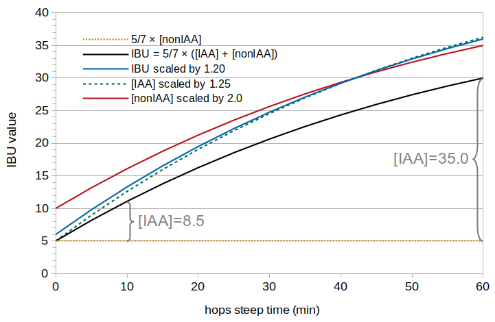
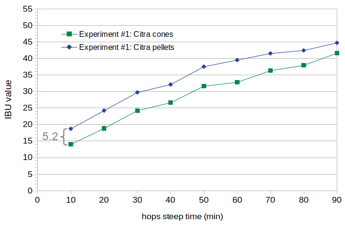
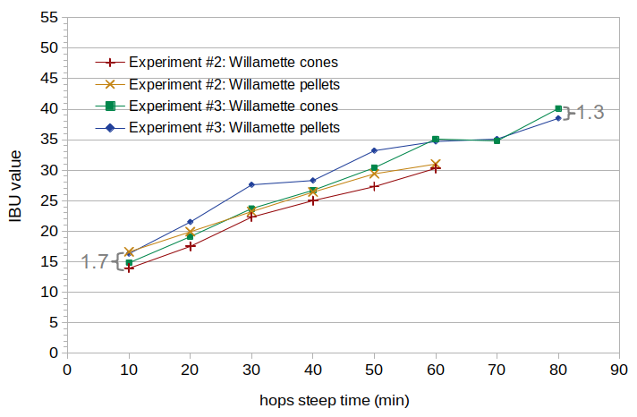
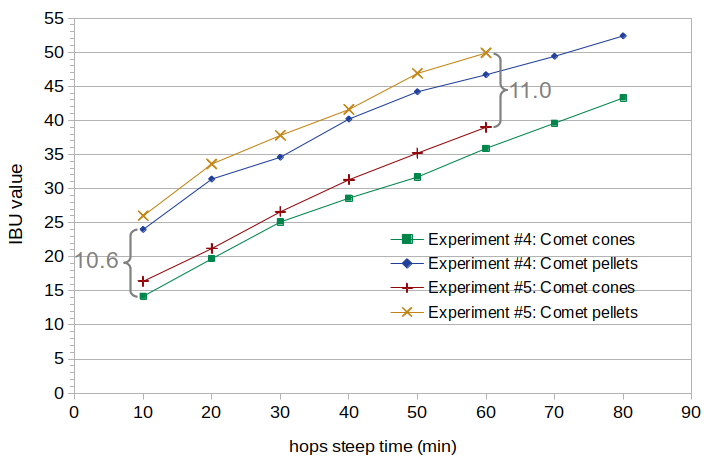

Abstract
Hop pellets are described as having greater utilization than hop cones. The predicted amount of increase, however, varies quite a bit between different reports. This blog post compares the IBUs from cones and pellets in a series of five experiments. While the IBUs from pellets were found to be consistently higher than IBUs from cones, it seems that this increase in IBUs is not caused by an increase in the rate of isomerization (as is typically claimed), but by a greater concentration of bitter substances produced soon after a hop addition. A separate blog post finds that these bitter substances are most likely not isomerized alpha acids, but probably oxidized alpha acids that are produced when hops are added to the boiling wort. Furthermore, the amount of increase in IBUs seems to be dependent on the hop variety. When controlling for the initial concentration of alpha acids, some hop varieties show very little increase (average 1.5 IBUs from 170 ppm of alpha acids), while others have a very large increase (average 10.8 IBUs from 170 ppm of alpha acids). Because of this variety-dependent increase, predicting IBUs from hop pellets is even more challenging than predicting IBUs from hop cones. For hop cones, it is estimated that about 6% of the alpha acids added to the wort are quickly oxidized and survive into the finished beer. (One ppm of oxidized alpha acids contributes about 0.7 IBUs.) Considering only the three hop varieties studied here, the increase in oxidized alpha acids from the use of pellet hops varies from a factor of 1.2 to a factor of 3.2. A rough (variety-independent) approximation for predicting IBUs from pellets is that the concentration of oxidized alpha acids produced during the boil doubles in beer made with pellets, from 6% to 12%.
1.1 Utilization
Hop utilization, U, is the ratio of the amount of isomerized alpha acids (IAA) in finished beer divided by the amount of alpha acids added to the kettle, and then multiplied by 100 to convert to percent [e.g. Lewis and Young, p. 266]:
| U = 100 × (isomerized alpha acids in beer) / (alpha acids added to kettle) | [1] |
1.2 Reported Differences Between Cones and Pellets
Hop pellets are almost always described as having greater utilization than hop cones [e.g. Daniels p. 78]. According to Michael Lewis and Tom Young, “the alpha acids dissolve most easily from extracts, less easily from pellets …, and least with whole hops” [Lewis and Young, p. 266]. The higher rate at which alpha acids from pellets "dissolve," compared with whole cones, is because “the pelletization process ruptures the lupulin glands and spreads the resins over the hop particles, giving a larger surface area for isomerization” [Hall, p. 58]. Greg Noonan says that “with pelletized hops, ruptured and better-exposed lupulin glands give greater utilization” [Noonan, p. 154].
Expressing pellets as more efficient than whole hops, Noonan provides a pellet correction factor (in table form) that varies from 1.0 to 1.5, based on boil time and gravity [Noonan, p. 215]. Mark Garetz recommends a pellet correction factor of 1.10 for boil times up to 30 minutes, otherwise a correction factor of 1.0 [Garetz, p. 131, 141]. Hieronymus says that hop pellets are 10% to 15% more efficient than cones [Hieronymus, p. 188]. According to Michael Hall, Randy Mosher specifies a correction factor of 1.33 [Hall, p. 62]. This is a wide range of relative increase, from 0% to 50% according to Noonan, and from 0% to 33% according to other sources.
The purpose of this blog post is to get a better understanding of how large an IBU increase there is when using pellets and how this increase can be modeled. A separate blog post looks at whether this increase is more likely to be the result of a greater concentration of isomerized alpha acids or an increase in other bittering compounds; it finds that the IBU increase is most likely caused by an increased concentration of oxidized alpha acids.
1.3 A Model of the Isomerization of Alpha Acids
Mark Malowicki [p. 27] provides a formula for the concentration of isomerized alpha acids (IAA) as a function of steep time (t, in minutes), temperature, and initial alpha-acid concentration ([AA]0, in ppm):
| [IAA]wort = [AA]0 × (k1/(k2-k1)) (e–k1t-e–k2t) | [2] |
1.4 Modeling IBUs from Pellets with a Scaling Factor
Figure 1 shows theoretical IBU values based on several scenarios described in this section. These IBU values are based on Val Peacock's model of IBUs [Peacock, p. 157], in which
| IBU = 5/7 × ([IAA] + [nonIAA]) | [3] |
The effect of pellets is usually expressed in the literature as a scaling factor [Hall, p. 62], for example a factor of 1.20 that is applied to the IBU value predicted for hop cones. In this case, if an IBU model developed for hop cones predicts 30 IBUs, a pellet correction factor of 1.20 would yield 36 IBUs (36 = 30 × 1.20). In Figure 1, the blue line shows theoretical IBU values predicted using a scaling factor of 1.20. Because this scaling factor depends on the IBU value, smaller "cone" IBU values result in a smaller increase, and larger "cone" IBUs result in a larger increase. For example, in Figure 1 the increase in IBUs is 2.2 IBUs at 10 minutes and 6.0 IBUs at 60 minutes.
Another way to model an increase in IBUs is with a scaling factor that depends on the concentration of isomerized alpha acids. Because IBUs are correlated with [IAA], the net effect is similar. In Figure 1, the dashed green line shows theoretical IBU values for pellets using a scaling factor of 1.25 applied to the concentration of IAA.
A third way to model an increase in IBUs is with a scaling factor that doesn't depend on IBUs or [IAA], but on the concentration of nonIAA (which is also proportional to the total concentration of hops in the boil). In Figure 1, the red line shows theoretical IBU values predicted by scaling the nonIAA concentration by a factor of 2.0. In this case, every IBU value is simply increased by 5, because the concentration of nonIAA doesn't vary with boil time.
 Figure 1. Hypothetical IBU values based on (a) Peacock's model (black line), (b) IBU scaling with a factor of 1.20 (blue line), (c) [IAA] scaling with a factor of 1.25 (dashed green line), (d) [nonIAA] scaling with a factor of 2.0 (red line). The IBUs predicted when [IAA] is zero are shown with a dotted gold line.
2. Experimental Overview and Methods
2.1 Overview
Five experiments were conducted to look at the relative difference in IBUs between hop cones and pellets. Within each experiment, two batches of beer were designed to be identical in all respects, except for the use of hop cones in one case (referred to as cones) and hop pellets in the other (referred to as pellets). The five experiments looked at (a) three varieties of hops, (b) the impact of krausen, and (c) the age of the pellets.
In all experiments, the alpha-acid rating of the cones and pellets was comparable, and adjusted when necessary to yield the same concentration of approximately 170 ppm of alpha acids at the start of the hop addition. For each batch, I took samples of wort at 10-minute intervals and quickly cooled them in an ice bath. Each sample was fermented into beer and sent to Oregon BrewLab for IBU analysis.
This set of experiments yielded 37 pairs of IBU values, with the values within a pair being directly comparable in terms of hop variety, boil gravity, initial alpha-acid concentration, boil time, and fermentation conditions.
The first experiment used Citra hops, the second and third used Willamette hops, and the fourth and fifth experiments used Comet hops. The Comet pellets were very fresh in the fourth experiment and about 2½ years old in the fifth experiment.
2.2 Procedures Common to All Experiments
Each experiment consisted of two batches brewed on the same day. I used as large a batch size as I dared in my 10 G (38 l) kettle, in order to minimize the effect of measurement errors and evaporation rate. I used 7.0 lbs (3.18 kg) of Briess Pilsen DME in 8.0 G (30.28 l) of water, yielding about 8.5 G (32 l) of wort with a specific gravity of about 1.037. I did not adjust the water profile or pH; the local water here in Portland, Oregon has relatively low alkalinity and hardness. This resulted in a pre-boil wort pH of about 5.70 to 5.80.
I added hops (i.e. started the steep time at 0) after the wort had been boiling for 5 minutes, to avoid the foam associated with the start of the boil. The hops were boiled for a steep time of 60 to 90 minutes with the cover on the kettle (except for taking samples) to minimize evaporation and the resulting changes in specific gravity. I did not use a mesh bag with the cones, because I think that it is more standard practice to have the hops freely floating in the wort. I targeted an initial alpha-acid concentration of 170 ppm in order to not exceed the solubility limit of approximately 200 ppm at boiling, using an estimated volume of about 8.28 G (31.36 l) when adding the hops and the experiment-specific alpha-acid (AA) ratings. For Experiment #1, an AA rating of about 14.1% for both cones and pellets translated into a hop addition of 1.333 oz (37.81 g). For Experiments #2 and #3, an AA rating of about 5.05% for both cones and pellets translated into an addition of 3.724 oz (105.57 g). For Experiment #4, an AA rating of about 10.0% for both cones and pellets translated into an addition of 1.880 oz (53.31 g). For Experiment #5, an AA rating of 9.70% for cones and 8.76% for pellets translated into additions of 1.939 oz (54.96 g) and 2.147 oz (60.86 g), respectively.
Samples were taken every 10 minutes from the start of steeping. Each sample (about 15 oz (0.43 l)) was taken from the boil in a measuring cup and then transferred to an aluminum cup using a wire mesh sieve to remove larger hop particles. The aluminum cup was placed in an ice bath and the contents were stirred to cool quickly. Samples were cooled below 140°F (60°C) within about 45 seconds. Once cooled to 75°F (24°C), the sample was transferred to a sanitized, sealed, and labelled quart (liter) container. I aerated each sample by vigorous shaking for 60 seconds, then added about .01 oz (0.28 g) of Safale US-05 yeast to target 750,000 viable cells per ml and degree Plato [Fix and Fix, p. 68]. (The process of taking a sample, cooling it, transferring it to a sanitized container, aerating, and pitching yeast took between 5 and 10 minutes.) (For the "cones" condition in Experiment #5, 32-oz (0.95-liter) samples were taken and transferred into 1.6 quart (1.5 liter) sanitized containers for fermentation with 0.017 oz (0.48 g) of Safale US-05 yeast.) After all samples were taken, the containers were cracked open to vent, and they fermented for nine to ten days. For every experiment except Experiment #2, I swirled the samples every day to remove most of the krausen deposits on the sides of the containers (mixing the krausen back into the beer). For Experiment #2, I let krausen deposits accumulate on the sides of the containers. After fermentation, I sent 4 oz (0.12 l) of each sample to Oregon BrewLab for IBU measurement.
2.3 Hops in Experiment #1
The hop cones in Experiment #1 were Citra from Hops Direct. The pellets were Citra from Yakima Valley Hops. Both were from the same harvest year (2017), and were about 3 months old at the time of the experiment. I purchased both the cones and the pellets soon after they became available and stored them in my freezer until the experiment. I sent samples to both Alpha Analytics and Brew Laboratory for analysis within 3 weeks of the experiment. Alpha Analytics used the spectrophotometric method ASBC 6A; Brew Laboratory used high-performance liquid chromatography (HPLC). The package ratings and analysis results are listed in Table 1. It can be seen that the analysis results are very consistent with the package ratings, except for the pellets result from Alpha Analytics. Verzele and De Keukeleire note that "there are easily differences up to 15-20% in alpha acids content between and within bales of a single hop delivery" [Verzele and De Keukeleire, p. 331], and so even this "outlier" (13.3%) is well within the expected variation. Because of the small number of samples, it is more appropriate to take the median than the mean for a representative value of the alpha acids. Therefore, the alpha-acid rating on brew day was about 14.2% for cones and 14.0% for pellets.
| Cones: Package Rating |
Cones: Alpha Analytics |
Cones: Brew Laboratory |
Pellets: Package Rating |
Pellets: Alpha Analytics |
Pellets: Brew Laboratory |
|
| alpha acids | 14.3% | 14.2% | 14.1% | 14.0% | 13.3% | 14.0% |
| beta acids | N/A | 3.6% | 3.4% | N/A | 3.9% | 3.8% |
| HSI | N/A | 0.265 | N/A | N/A | 0.293 | N/A |
2.4 Hops in Experiments #2 and #3
In Experiments #2 and #3, I used Willamette hops from Yakima Chief Hops. The cones were from lot PR2-ZKUWIL5041 and the pellets were from lot P92-ZKUWIL5170, both about 2½ years old at the time of the experiment. Analysis was performed by Brew Laboratory within two weeks of the experiment. The package ratings and analysis results are listed in Table 2. The alpha-acid rating on brew day was about 5.0% for both cones and pellets.
The reason for conducting Experiment #3 was that the results from Experiment #2 were so surprising to me (see Section 3) that I wanted to replicate the results. In addition, in Experiment #2 I did not remove krausen deposits by swirling, and in Experiment #3 I made sure that fermentation conditions were the same as in Experiments #1, #4, and #5.
| Cones: Package Rating |
Cones: Brew Laboratory |
Pellets: Package Rating |
Pellets: Brew Laboratory |
|
| alpha acids | 5.0% | 5.0% | 4.8% | 5.1% |
| beta acids | 3.8% | 3.1% | 4.0% | 3.2% |
| HSI | 0.252 | N/A | 0.298 | N/A |
2.5 Hops in Experiments #4 and #5
In Experiment #4, I used Comet hops from Hops Direct. (The customer service representative at Hops Direct was very helpful, and they were able to fulfill my request for both hop cones and pellets at close to 10% AA from the most recent (2018) harvest.) These hops were stored in vacuum-sealed packaging in my freezer. Analysis was performed by Advanced Analytical Research (AAR Lab) within one week of the experiment. I used an AA rating of 10.0% for both cones and pellets as the best estimates at the time of the experiment.
| Cones: Package Rating |
Cones: AAR Lab |
Pellets: Package Rating |
Pellets: AAR Lab |
|
| alpha acids | 9.9% | 10.8% | 10.0% | 9.84% |
| beta acids | N/A | 3.92% | N/A | 3.69% |
| HSI | N/A | 0.25 | N/A | 0.33 |
In Experiment #5, conducted four months later, I used the same hop cones, but Comet pellets from YCH Hops (lot P92-ZLUCOM5216) that were 2½ years old at the time of the experiment. Analysis was performed by AAR Lab with three weeks of the experiment. Because of the age of the hops, I used the analysis results from AAR Lab (9.70% for cones and 8.76% for pellets) as the best estimates for the AA ratings at the time of the experiment.
| Cones: Package Rating |
Cones: AAR Lab |
Pellets: Package Rating |
Pellets: AAR Lab |
|
| alpha acids | 9.9% | 9.70% | 9.5% | 8.76% |
| beta acids | N/A | 3.17% | 4.3% | 3.22% |
| HSI | N/A | 0.35 | 0.326 | 0.42 |
3. Results
The estimated room-temperature volume at the start of steeping was 8.28 G (31.36 liters) for all conditions and all experiments. The average specific gravity after 10 minutes of steeping was 1.0384 (minimum 1.0378, maximum 1.0392). The specific gravity after a 90-minute steep time was about 1.0404. The small change in specific gravity during the boil (due to keeping the lid on the kettle) means that there is little difference between using the measured IBU values for analysis or normalizing these IBUs by the volume when the sample was taken. For simplicity and clarity, the measured IBU values are used below.
Figures 2, 3, and 4 show the measured IBU values from Experiments 1 through 5. The average difference in IBUs between cones and pellets is provided in each figure.
 Figure 2. Measured IBU values for Citra cones and pellets. The average difference is 5.2 IBUs.
 Figure 3. Measured IBU values for Willamette cones and pellets, in two separate experiments. The average difference in Experiment #2 is 1.7 IBUs, and the average difference in Experiment #3 is 1.3 IBUs.
 Figure 4. Measured IBU values for Comet cones and pellets, in two separate experiments. In Experiment #4, both cones and pellets were recently harvested. In Experiment #5, the pellets were 2.5 years old at the time of the experiment. The average difference in Experiment #4 is 10.6 IBUs, and the average difference in Experiment #5 is 11.0 IBUs.
In Experiment #2, krausen was allowed to build up on the sides of the fermentation vessels, which explains the overall lower IBU values when compared with Experiment #3. (Another blog post looks at the impact of krausen on IBUs; it finds that krausen that adheres to the sides of the fermentation vessel can cause a significant decrease in IBUs.)
The increase in IBUs in Experiment #5 (compared with Experiment #4) may have been caused by the greater weight of hops used in this experiment. A greater weight of hops in the same volume was used to target the same initial alpha-acid concentration of 170 ppm. This may have resulted in greater IBU values because (a) the estimated decrease in alpha-acid content over time was greater than the actual decrease, and so the greater weight of hops over-compensated for the decrease in AA levels, (b) variation in AA levels in the hops, (c) the greater weight of hops increased the concentration of nonIAA compounds, thereby increasing IBU levels, or (d) some combination of all of these reasons.
4. Analysis
4.1 Visual Analysis of the Figures
It is easily seen in Figures 2, 3, and 4 that the increase in IBUs from the use of pellets is closer to the pattern associated with nonIAA scaling in Figure 1 than to the pattern of IAA or IBU scaling. This constant offset is difficult to explain as a relative increase in IBUs or IAA (as illustrated in Figure 1), but very easy to explain as a relative increase in nonIAA concentration. This may explain why Noonan used different utilization factors for cones and pellets at different steep times [Noonan, p. 215], resulting in a roughly constant increase for pellets regardless of steep time.
It is also clear that the increase in IBUs changes with the use of different hop varieties. There is an average increase of 5.2 IBUs, 1.5 IBUs, and 10.8 IBUs for Citra, Willamette, and Comet pellets, respectively. Within a variety, the increase in IBUs from cones to pellets is quite similar. This topic is discussed more in Section 4.3. Across varieties, the cone IBU values are much more similar than the pellet IBU values. For example, at a 10-minute steep time, the cone IBU values are 14.0, 13.9, 14.8, 14.2, and 16.4 (standard deviation 0.9 IBUs) for Experiments #1 through #5, respectively, while the pellet IBU values are 18.7, 16.6, 16.3, 24.0, and 26.0 (standard deviation 4.0 IBUs).
4.2 Modeling Analysis
We can use the technique described in Estimating Isomerized Alpha Acids and nonIAA from Multiple IBU Measurements to split IBU values into estimates of (a) the concentration of IAA and (b) the concentration of other bitter substances measured with the IBU that are called nonIAA. In brief, we can use multiple IBU values from the same batch of beer, along with (a) the equation in Section 1.3 that describes the isomerization of alpha acids as a function of time and temperature [Malowicki, p. 27] and (b) the equation in Section 1.4 that describes the IBU as a combination of IAA and nonIAA in the finished beer [Peacock, p. 161], in order to estimate two scaling factors: scalingIAA and scalingnonIAAhops. The scalingIAA parameter is the scaling factor that accounts for losses of IAA during the boil, fermentation, and aging; scalingnonIAAhops is the scaling factor from concentration of total hop particles in the wort to the concentration of hop-related nonIAA in the beer (excluding malt-related nonIAA). With scalingIAA and scalingnonIAAhops, as well as the weight of the hops, initial alpha-acid concentration, steep time, and original gravity, we can map from IBU value to IAA and nonIAA concentrations, and vice versa.
A separate blog post investigates the reason for the increase in IBUs associated with hop pellets, and concludes that this increase in IBUs is most likely caused by an increase in the concentration of oxidized alpha acids produced when the hops are added to the kettle. Using models that predict IBUs due to malt polyphenols, hop polyphenols, and oxidized beta acids, we can change the scalingnonIAAhops parameter from a single parameter estimating the combined effect of all hop-related auxiliary bittering compounds to a parameter estimating the effect of only oxidized alpha acids, scalingoAA.
By searching over a large number of values of scalingIAA and scalingoAA to minimize the error on the cones batch of IBU values in Experiment #1, we get scalingIAA = 0.417 and scalingoAA = 0.057. These results indicate that somewhat less than half of the isomerized alpha acids from this batch made it into the finished beer, and about 6% of the alpha acids were oxidized and survived into the finished beer. These scaling factors yield a root-mean-square (RMS) error of 0.77 IBUs on the nine IBU values, with a maximum difference of -1.39 IBUs at 90 minutes. We can do the same search for scalingIAA and scalingoAA using the set of nine values of pellets IBU data from Experiment #1. In this case, we get scalingIAA = 0.406 and scalingoAA = 0.109, with an RMS error of 0.74 IBUs and a maximum difference of -1.42 IBUs at 50 minutes. These results indicate that nearly the same percentage of IAA were produced and made it into the finished beer in both the cones and the pellets batches (i.e. hop utilization was the same in both cases), but that the concentration of oxidized alpha acids nearly doubled in the pellets batch.
Table 5 lists the IAA scaling factor (scalingIAA) for both cones and pellets in the five experiments. It can be seen that the IAA scaling factor is very similar between cones and pellets for all five experiments, slightly higher in some cases and slightly lower in other cases. (The average cone-to-pellet IAA ratio is 1.05.) These small differences are probably due to measurement error, and it seems most likely that the IAA scaling factor is basically the same for both cones and pellets. (The IAA scaling factor in Experiment #2 is expected to be lower than all of the others because the krausen was not mixed back into the beer in this experiment, resulting in greater loss of both IAA and oAA.)
| Exp. #1 | Exp. #2 | Exp. #3 | Exp. #4 | Exp. #5 | |
| IAA scaling factor: cones | 0.417 | 0.339 | 0.416 | 0.461 | 0.472 |
| IAA scaling factor: pellets | 0.406 | 0.307 | 0.359 | 0.465 | 0.476 |
We can then set the IAA scaling factor within each experiment to be the average of the IAA scaling factors for cones and pellets, and re-estimate the oAA scaling factors. Table 6 shows the new estimates for IAA scaling factors (scalingIAA) and oAA scaling factors (scalingoAA). Table 7 shows the measured IBU values and estimated IBU values using the model and scaling factors from Table 6. The RMS errors are as follows: Exp #1 cones: 0.78, pellets 0.75; Exp #2 cones: 0.44, pellets 0.39; Exp #3 cones: 1.16, pellets: 1.17; Exp #4 cones: 0.91, pellets: 0.58; Exp #5 cones: 0.43, pellets: 0.62. The RMS error over all experiments is 0.80 IBUs. Note that the average oAA scaling factor for cones estimated here (6.3%) is close to the value estimated in Section 8.2 of The Relative Contribution of Oxidized Alpha- and Beta-Acids to the IBU (5.9%).
| Exp. #1 | Exp. #2 | Exp. #3 | Exp. #4 | Exp. #5 | |
| IAA scaling factor | 0.4115 | 0.323 | 0.3875 | 0.463 | 0.474 |
| oAA scaling factor: cones | 0.059 | 0.072 | 0.071 | 0.046 | 0.066 |
| oAA scaling factor: pellets | 0.107 | 0.088 | 0.084 | 0.148 | 0.150 |
| 10 min | 20 min | 30 min | 40 min | 50 min | 60 min | 70 min | 80 min | 90 min | |
| Exp 1: cones (meas., est.) |
14.0, 13.8 |
18.8, 19.1 |
24.2, 23.7 |
26.6, 27.6 |
31.6, 31.0 |
32.8, 33.8 |
36.3, 36.3 |
37.9, 38.3 |
41.6, 40.0 |
| Exp 1: pellets (meas., est.) |
18.7, 19.1 |
24.2, 24.3 |
29.7, 28.8 |
32.1, 32.8 |
37.5, 36.2 |
39.5, 39.0 |
41.5, 41.5 |
42.4, 43.5 |
44.7, 45.3 |
| Exp 2: cones (meas., est.) |
13.9, 14.1 |
17.5, 18.2 |
22.3, 21.8 |
25.0, 24.9 |
27.3, 27.6 |
30.3, 29.8 |
|||
| Exp 2: pellets (meas., est.) |
16.6, 15.8 |
19.9, 19.9 |
23.2, 23.5 |
26.4, 26.5 |
29.4, 29.2 |
31.0, 31.4 |
|||
| Exp 3: cones (meas., est.) |
14.8, 14.9 |
19.1, 19.9 |
23.7, 24.1 |
26.7, 27.8 |
30.4, 30.9 |
35.1, 33.6 |
34.8, 35.9 |
40.1, 37.8 |
|
| Exp 3: pellets (meas., est.) |
16.3, 16.3 |
21.5, 21.2 |
27.6, 25.4 |
28.3, 29.0 |
33.2, 32.2 |
34.7, 34.8 |
35.1, 37.1 |
38.5, 39.0 |
|
| Exp 4: cones (meas., est.) |
14.2, 13.5 |
19.7, 19.6 |
25.1, 24.8 |
28.6, 29.3 |
31.7, 33.2 |
35.9, 36.5 |
39.6, 39.3 |
43.3, 41.7 |
|
| Exp 4: pellets (meas., est.) |
24.0, 24.5 |
31.4, 30.4 |
34.6, 35.6 |
40.2, 40.0 |
44.2, 43.8 |
46.7, 47.0 |
49.4, 49.8 |
52.4, 52.1 |
|
| Exp 5: cones (meas., est.) |
16.4, 15.7 |
21.2, 21.7 |
26.6, 26.9 |
31.3, 31.4 |
35.2, 35.3 |
39.0, 38.6 |
|||
| Exp 5: pellets (meas. est.) |
26.0, 26.6 |
33.6, 32.7 |
37.8, 38.0 |
41.6, 42.5 |
46.9, 46.5 |
49.9, 49.8 |
The change in oAA factor between cones and pellets for each experiment is listed in Table 8, expressed as a ratio of pellets/cones. It can be seen that these factors vary from an 18% to 222% increase for pellets compared with cones, and that this increase is approximately the same within a hop variety but different between varieties. For example, for Willamette the ratios 1.22 and 1.18 are very similar, and for Comet the ratios 3.22 and 2.27 are more similar to each other than they are to the ratios of other varieties. The average ratios for each variety are 1.81, 1.20, and 2.74 for Citra, Willamette, and Comet, respectively. Over all three varieties, the pellet-to-cone ratio is 1.9, representing an approximate doubling in the concentration of oxidized alpha acids in the finished beer.
| Exp. #1 | Exp. #2 | Exp. #3 | Exp. #4 | Exp. #5 | |
| oAA pellet-to-cone ratio | 1.81 | 1.22 | 1.18 | 3.22 | 2.27 |
5. Predicting an Increase in IBUs
5.1 Variety-Specific Factors
The results from Sections 3 and 4 indicate that the increase in IBUs and oAA concentration that results from using hop pellets is dependent on the hop variety. We can check if any quantitative descriptions of these varieties might allow us to predict the amount of increase in oxidized-alpha acid concentration.
Table 9 lists a variety of quantitative descriptions of the three varieties used here. The alpha-acid and beta-acid levels are taken from the averages of cones and pellets in Section 2, and the other descriptions are taken from The Hops List [Healey]. Each cell shows the typical composition (in percent or ml/100g) and the approximate concentration used in these experiments. If a descriptor is associated with the oAA pellet-to-cone ratio, we would expect a correlation between the concentration of this descriptor and the oAA pellet-to-cone ratio for this variety. In other words, we are looking for concentration values that increase in order from Willamette to Citra to Comet. None of these descriptors show such a trend, meaning that we can not currently predict the oAA pellet-to-cone ratio from knowledge of the hop variety or characteristics.
| alpha acid (%) | beta acid (%) | cohumulone | total oil | storability | |
| Citra | 14.1% 170 ppm |
3.67% 44 ppm |
27.5% 47 ppm |
2.25 ml/100g 3% v/v |
75% |
| Comet | 10.0% 170 ppm |
3.5% 60 ppm |
41% 70 ppm |
1.98 ml/100g 3% v/v |
49% |
| Willamette | 5.0% 170 ppm |
3.5% 120 ppm |
32.5% 55 ppm |
1.25 ml/100g 4% v/v |
62% |
Another possibility is that there is a transformation (other than oxidation) which happens while pellets age in their nitrogen-flushed packaging, and this hypothetical transformation causes less of a pellet-based IBU increase with older hops. The purpose of Experiment #5 was, in fact, to test this hypothesis. In Experiment #1, the Citra pellets were about 3 months old at the time of the experiment, and the pellet-based IBU increase was moderate. In Experiments #2 and #3, the Willamette pellets were several years old at the time of the experiment, and the pellet-based IBU increase was minor. In Experiment #4, the Comet pellets were extremely fresh and the increase was quite large. Therefore, Experiment #5 used Comet pellets that were deliberately several years old at the time of the experiment. If the results of Experiment #5 showed an increase in IBUs similar to that of the Willamette hops, then this hypothesis of older pellet hops having less increase would have been supported. However, the results showed just as large an increase in IBUs as in Experiment #4, indicating that the age of the (properly stored and nitrogen flushed) pellets has no impact on the increase in IBUs.
This leaves us with measuring the variety-specific ratio for each variety of hops. With hundreds of available hop varieties (e.g. [Healey]), this is a nearly impossible task. The more practical but less accurate approach is to treat all hop varieties as having the same increase as the average of the three varieties studied here, i.e. an oAA pellet-to-cone ratio of about 1.9. (It is also possible that there is no variety-specific increase, but that the differences in the ratios are due to differences in the pellet-production process at each manufacturer. Checking this hypothesis would require further study of both variety-specific and manufacturer-specific pellets.)
5.2 Modeling an Increase in IBUs
As seen in Table 6, when using hop cones, about 6% of the alpha acids added to the wort are oxidized and survive into the finished beer. For pellet hops, about 12% of the alpha acids added to the wort are oxidized and survive into the beer. There is a factor of 0.9155 for scaling the light absorption at 275 nm from oxidized alpha acids to isomerized alpha acids, as seen in Figure 7 of Maye et al. [Maye, p. 25], and a scaling factor of 51.2/69.68 to convert the light absorption of isomerized alpha acids to IBUs [Peacock, p. 161]. Therefore, 1 ppm of oxidized alpha acids will produce 0.67 IBUs. Let's consider an example to see how to model the use of pellet hops. If we have a beer made with 1.50 oz (42.52 g) of 10% AA hops boiled for 60 minutes in 5.50 gallons (20.82 liters) of wort (and ignoring evaporation), when we add the hops we have 204 ppm of alpha acids added to the wort (204 ppm = 0.10 × 42.52 g × 1000 / 20.82 l). From the 0.150 oz (4.252 g) of alpha acids added to the wort, with hop cones we get 0.009 oz (0.2551 g) of oxidized alpha acids, or 12.25 ppm, in the finished beer (12.25 ppm = 4.252 g × 0.06 × 1000 / 20.82 l), increasing the IBU by 8.24 (0.673 × 12.25 ppm). With hop pellets, we get 0.018 oz (0.5102 g) of oxidized alpha acids, or 24.51 ppm, increasing the IBU by 16.48. These oxidized-alpha-acid IBUs are in addition to the IBUs from isomerized alpha acids (e.g. 30 IBUs) and the IBUs from malt and hop polyphenols (e.g. 2 IBUs), resulting in 40 IBUs for cones and 48 IBUs for pellets. In this example, then, pellets demonstrate a 20% increase in IBUs compared with cones.
6. Summary and Conclusion
The IBU data from these five experiments showed an unexpected but consistent pattern: the increase in IBUs from pellets is constant over a range of steep times, instead of increasing with steep time. It therefore seems that the increase in IBUs when using pellets is not caused by an increase in the rate of isomerization or availability of alpha acids, and should not be modeled with a multiplication factor applied to [IAA] or IBUs. Instead, this increase in IBUs can be modeled by an increase in the concentration of oxidized alpha acids produced during the boil, as discussed in a separate blog post. The amount of increase appears to be dependent on the hop variety and is not easily predicted from characteristics within each variety. Therefore, the most practical way to model this increase in IBUs is to treat the isomerization of alpha acids in the same way as hop cones, but to double the concentration of oxidized alpha acids ending up in the finished beer.
7. Acknowledgement
I greatly appreciate the high-quality IBU analysis provided by Dana Garves at Oregon BrewLab. This accuracy can be seen in the smooth and consistent shape of the IBU plots in Figures 2, 3, and 4. Without such consistent accuracy, it would not be possible to draw meaningful conclusions from the data.
References
Navigate to:
AlchemyOverlord home page